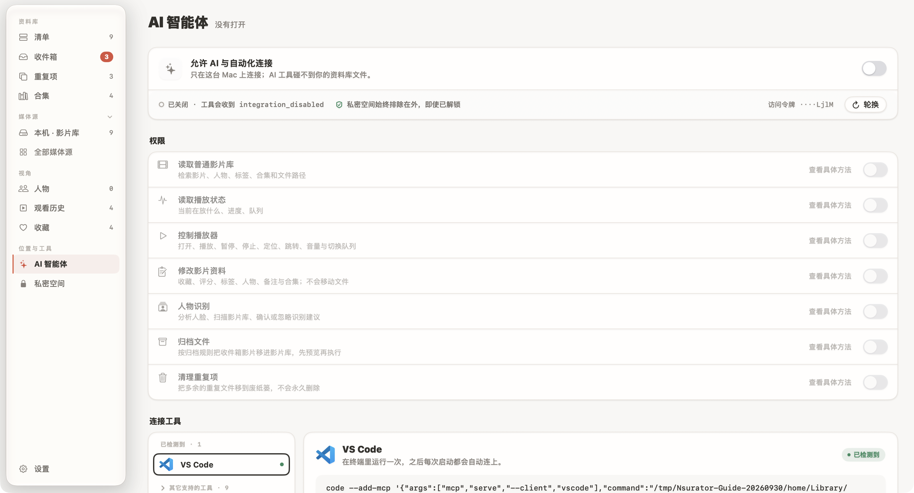

AI 可以从一句自然语言开始找影片，但它能看到什么、能改什么，应当由你决定。第一次连接时，先完成一次只读查询，确认范围正确，再逐步开放确实需要的操作。
- 理解总开关与各项权限
- 从 App 复制本机连接命令
- 用只读查询检查连接结果
先看权限，再打开连接
AI 连接属于 Pro 功能。打开工作台侧栏「AI 智能体」，先阅读权限列表：读取普通影片库、读取播放状态、控制播放器、修改影片资料、人物识别、归档文件和清理重复项，分别控制不同能力。

确认拥有 Pro 后，打开「允许 AI 与自动化连接」。第一次使用，先只开放你需要的读取权限，再配置工具。查找片名通常需要读取普通影片库；知道当前播放到哪里，需要读取播放状态。让 AI 暂停或跳转影片，则还需要控制播放器。
修改影片资料和归档、清理文件，是更进一步的操作。等只读查询工作正常，并且你理解结果会写到哪里，再按任务开启。私密空间始终排除在 AI 接口之外，即使它在 App 中已经解锁。
选择工具，复制这台 Mac 的命令
- 确认需要使用的 AI 工具已经安装。
- 在 Nsurator 的「连接工具」中选择它，例如 Claude Code。
- 阅读对应说明，点击「复制命令」。
- 按页面提示在终端执行，随后在该工具中确认 Nsurator 连接是否可用。
命令包含这台 Mac 的实际运行路径，应该从你自己的 App 里复制。不要照抄本文截图中的临时演示目录。不同 AI 工具的配置方式不完全相同，以选中工具后显示的说明为准。
「已检测到」表示 App 找到了工具，不等于连接已经成功。配置完成后还需要发起一次实际查询，再看返回结果和最近活动。
从一条不会改文件的请求开始
先选择一个结果容易核对的问题，例如：
帮我列出影片库里已经有的 Blender 开放电影，只查询，不修改资料或文件。
拿返回的片名与清单对照。结果正确以后，再尝试更明确的查询，例如按片名找文件，或在开放播放状态权限后询问当前播放进度。
你也可以请求一份片单建议，但“给建议”和“把建议保存为合集”需要的权限不同。只开放读取时，就先让 AI 返回文字片单，自己核对后再决定是否允许写入。
演示截图里的「最近活动」为空，因为这套截图环境没有连接真实 AI 工具。它用于说明界面入口和权限边界，不表示已经完成一次 AI 操作。
用最近活动核对结果
实际使用后，查看页面下方「最近活动」，检查工具请求了什么、是否执行成功。遇到权限提示时，先判断这个任务是否确实需要该权限，再去调整；不要为了消除提示一次打开所有权限。
不再需要 AI 访问时，可以关闭总开关。为不同工具管理访问时，页面还提供专属令牌相关入口，便于分别限制或撤销工具的访问。
如果准备让 AI 参与整理，建议先读归档与重复项攻略。你越清楚 App 如何比较文件、怎样预览归档结果，越容易审阅 AI 提交的操作建议。
步骤与界面依据 2026 年 9 月的本地版本核对。部分收藏与续播进度为演示数据，图片来源见素材署名。